01
MONOCROMO//PRETO
CARCAÇA FOSCA · ELEVAÇÃO FRONTAL
ARCHIVE ✕✕ / EXPOSIÇÃO DIGITAL
COMPANION
REIMAGINADO
CALIBRANDO SALA 01
00/100
Um estudo curatorial de forma, repetição e presença emocional — vinil moldado, esculturas de edição aberta e artefatos da cultura de rua, reunidos em um único arquivo.
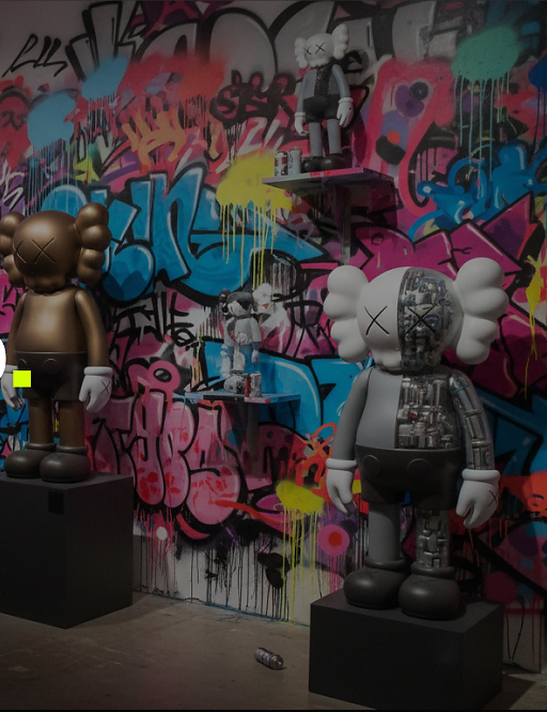
02 — MANIFESTO
FORMA
A repetição como linguagem. Uma silhueta reafirmada até deixar de ser brinquedo e se tornar monumento.
MATERIAL
Vinil moldado, fosco e brilhante, com emendas visíveis. O processo industrial tratado como ofício escultórico.
INTENÇÃO
Não é uma loja. É um arquivo — onde cada objeto é documentado, medido e recebe espaço para ser observado.
03 — FIGURAS EM DESTAQUE
O arquivo se abre com um estudo completo de rotação. Cada figura é fotografada sob a mesma luz e à mesma distância, para que as diferenças entre as edições se tornem o tema.
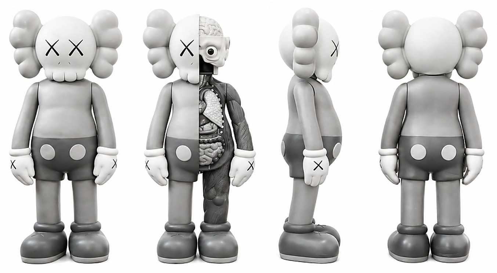
01
CARCAÇA FOSCA · ELEVAÇÃO FRONTAL
02
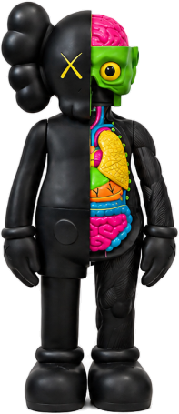
MEIA SEÇÃO · COR INTERNA
03
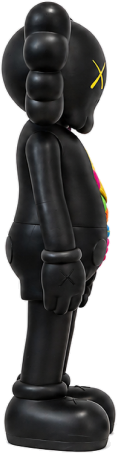
ESTUDO DE SILHUETA · 90°
04
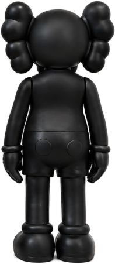
LINHA DE EMENDA · REGISTRO DO MOLDE
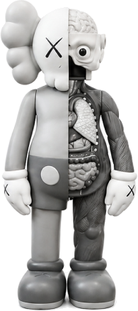
ESPÉCIME KA—889 / MEIA SEÇÃO · ESCANEAMENTO 00%
04 — ANATOMIA
Uma metade permanece selada. A outra é aberta como um espécime. A figura é lida duas vezes — como personagem e como objeto manufaturado com um desenho de seção.
01
Vinil moldado fosco, parede de 2,4 mm. A superfície é deliberadamente silenciosa para a silhueta falar.
02
Um molde anatômico completo — caixa torácica, vísceras, musculatura — feito em escala de colecionador e pintado à mão.
03
A marca que tornou a figura reconhecível no mundo todo. Dois traços cruzados no lugar de um rosto inteiro.
04
O peso se concentra nas botas. A postura parece pesada, imóvel e ligeiramente resignada.
05 — ENSAIO VISUAL HIGGSFIELD
O arquivo não é apenas estático. Uma interpretação cinematográfica gerada com Higgsfield percorre o objeto — luz de galeria, órbita lenta, superfície, emenda e brilho — até a figura deixar de parecer um produto e começar a parecer presença.
ESPAÇO DO FILME · AGUARDANDO FONTE
Coloque a exportação do Higgsfield em
video/higgsfield-film.mp4
BRIEF E PROMPTS DE EXPORTAÇÃO — video/README.md
06 — MODO EXPOSIÇÃO
Retirados do pedestal do comércio e colocados em uma sala sem mais nada. Escala, distância e silêncio fazem a curadoria.
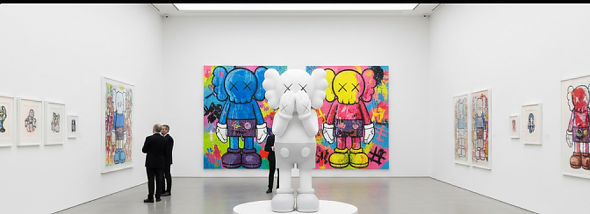
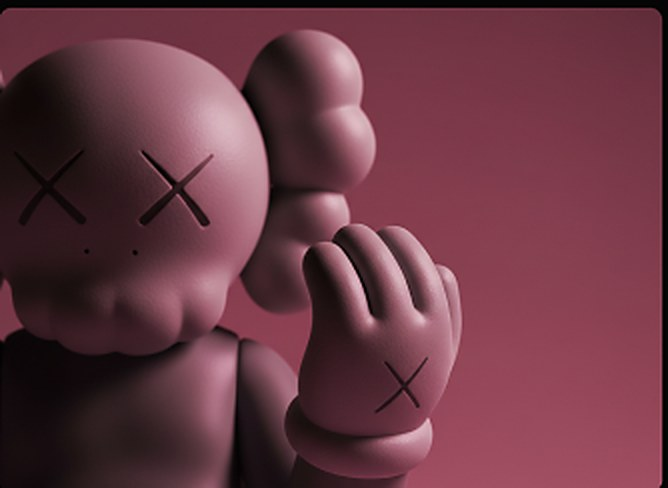
“A figura cobre os olhos, e a sala se preenche com tudo o que o rosto não revela.”
NOTA CURATORIAL — SALA 02, TEXTO DE PAREDE
07 — ESTUDO DE MODELO
A mesma silhueta lida por duas lógicas de construção: um objeto moldado e selado, e uma interpretação totalmente mecânica com cada componente exposto.
ESPÉCIME — A / MOLDE CLÁSSICO
Volume fechado. Nenhuma emenda à mostra, nenhum mecanismo sugerido. A emoção vive inteiramente na pose.
ESPÉCIME — B / MECÂNICO
Mesmo contorno, honestidade oposta. A carcaça se torna transparente e o objeto admite que foi projetado.
■ SEC. MODELO: KA—889_DISSECT // P&D LAB TÓQUIO // FOLHA 02 DE 04
08 — CULTURA DE RUA
A linguagem começa ao ar livre — spray, repetição, uma marca reafirmada até se tornar um nome. O que a galeria depois coloca sobre um pedestal foi primeiro pintado em um muro à noite.
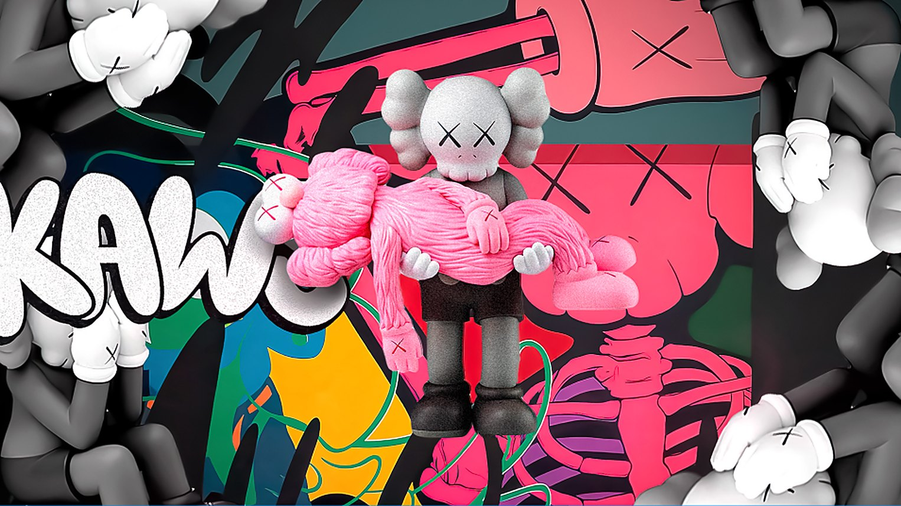
09 — LANÇAMENTOS LIMITADOS
Três peças da janela atual do arquivo. As edições são definidas na produção; nada é reimpresso quando a janela se encerra.
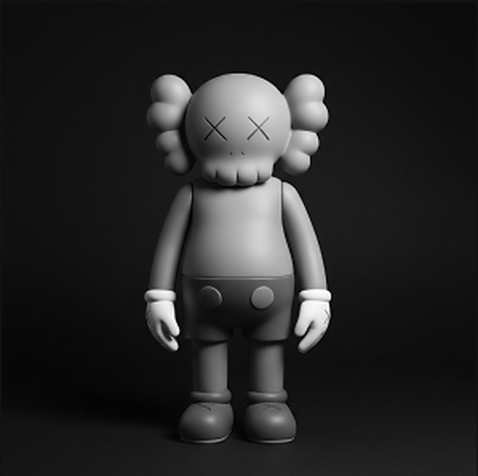
Figura moldada de 11 polegadas em escala de cinza. Olhos ✕ de assinatura, carcaça fosca e base pesada.
ADQUIRIR PEÇA →
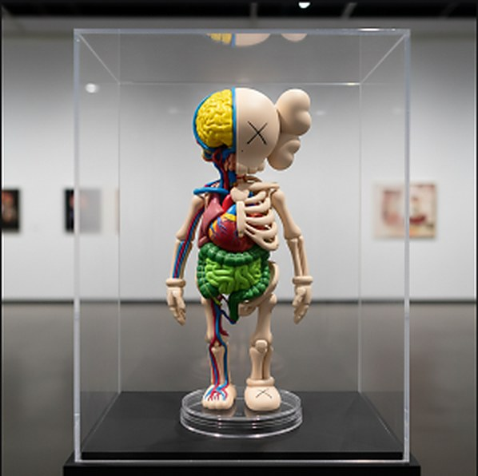
Objeto de exposição em meia seção com molde interno pintado à mão. Acompanha vitrine.
ADQUIRIR PEÇA →
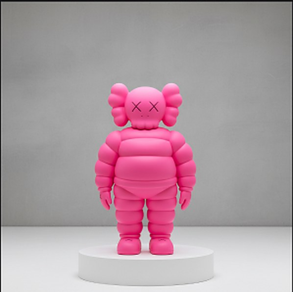
Estudo de forma inflada em néon radiante. Lançado uma vez, agora preservado para referência.
VER NO ARQUIVO →
10 — VESTUÁRIO
O arquivo deixa a vitrine. Moletom pesado, motivos serigrafados e peças de corte e costura carregam a mesma silhueta na escala do corpo.
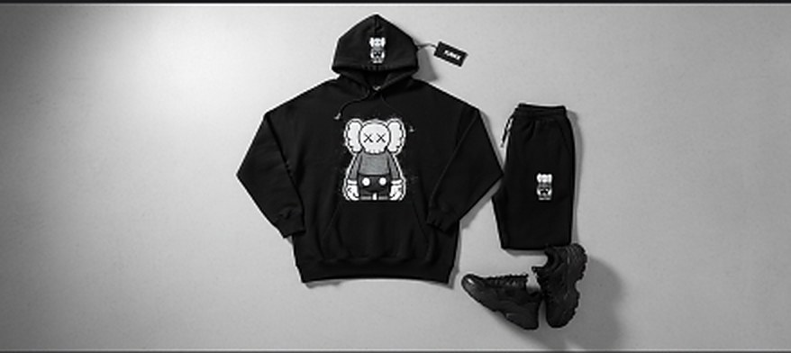
11 — O ARQUIVO
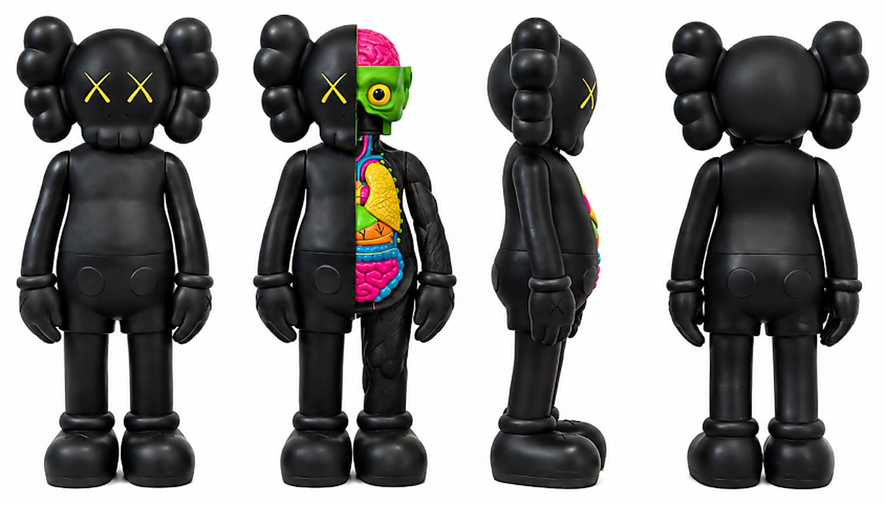
12 — ACESSO
O acesso ao arquivo é liberado para uma lista. Sem contagens regressivas, sem ruído — uma mensagem quando a sala abrir.
PROJETO CONCEITUAL · NADA É ENVIADO, ARMAZENADO OU TRANSMITIDO.